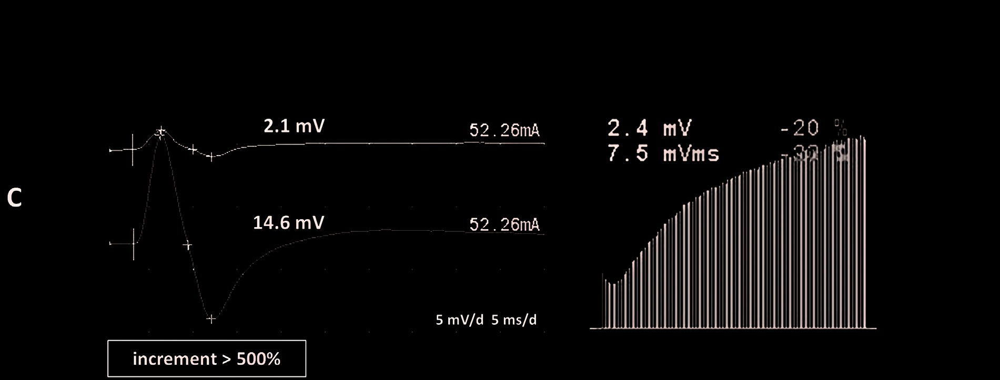

Comparação chocante
LEMS: clínica, ENMG e tratamento
MG no músculo/receptor × LEMS no neurônio. A matriz do diagnóstico diferencial nasce aqui.
Clínica proximal + desautonomia
Preferência do LEMS: proximal e simétrica de membros; face/ptose possíveis. LEMS pode apresentar desautonomia — alterações pupilares (midríase ou miose), entre outras manifestações autonômicas.
A ACh é neurotransmissor da contração motora e do SNA (parassimpático depende de liberação de ACh). Como o alvo do LEMS é o neurônio liberador, e não o receptor muscular, podem ser atingidos outros neurônios liberadores de ACh, incluindo os do SNA → desautonomia possível no LEMS (e não na MG típica).

Kouyoumdjian JA, Estephan EP. Arq Neuropsiquiatr 2023. Licensed under CC BY 4.0. Source: PMC10756823 · DOI 10.1055/s-0043-1777749
Amplitude ↑
A onda sobe com o uso: 2,1 mV → 14,6 mV após esforço isométrico 10 s. É a facilitação eletrofisiológica — espelho da MG. RNS 20 Hz mostra escada ascendente.
Mapa MG × LEMS
Mapa mental: MG = problema "no músculo/receptor" (pós-sináptico); LEMS = problema "no neurônio" (canal de Ca²⁺ no axônio liberador de ACh).
ENMG incremental + VGCC
Diagnóstico de LEMS: também por ENMG de placa, mas com padrão incremental: quanto mais usa/estimula, a amplitude da onda aumenta — oposto do decremental da MG.
Anticorpo do LEMS: anti–canal de cálcio; sigla de prova P/Q-type VGCC (anti–P/Q-VGCC).
Amifampridina US vs piridostigmina
Tratamento do LEMS é semelhante à lógica da MG na prova (sintomático ± imunoterapia).
Pegadinha: Literatura americana coloca amifampridina como 1ª linha no LEMS. Em prova BR / na prática: se amifampridina não aparecer, marcar piridostigmina ± imunoterapia se necessário — mesmo eixo da MG.
Matriz-âncora — MG × LEMS
| Eixo | MG | LEMS |
|---|---|---|
| Alvo | AChR (pós-sináptico / "músculo") | Canal de Ca²⁺ pré-sináptico ("neurônio") |
| Curso com uso | Fatigabilidade (piora) | Facilitação inicial (melhora) |
| Olho | Porta clássica | Pode, mas preferência proximal de membros |
| Pupila/SNA | Pupila poupada | Desautonomia possível |
| ENMG | Decremental | Incremental |
| Ac | Anti-AChR (~90%); MuSK se generalizada | Anti–P/Q-VGCC |
| Tórax/neoplasia | Timo/timoma | ~50% neoplasia; CaPC |
| Tto prova | Piridostigmina ± imuno; timectomia se critérios | Amifampridina (US) ou piridostigmina ± imuno |
Matriz fecha a comparação miastenia × LEMS.
Síntese comparativa: Miastenia Gravis vs Síndrome de Lambert-Eaton.
Série CMAP com amplitude ↑ (incremental) lado a lado com ↓ (decremental).